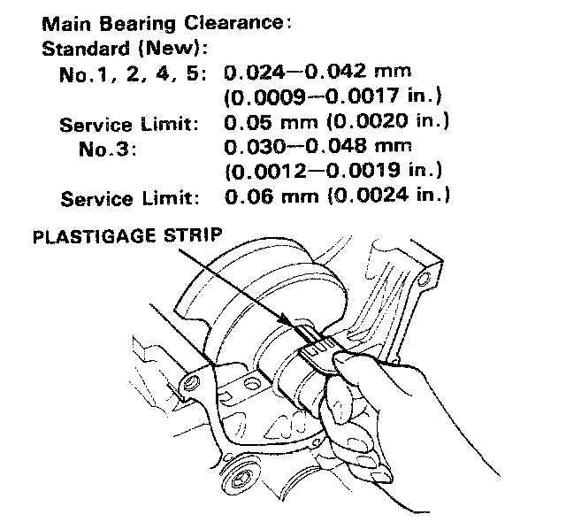
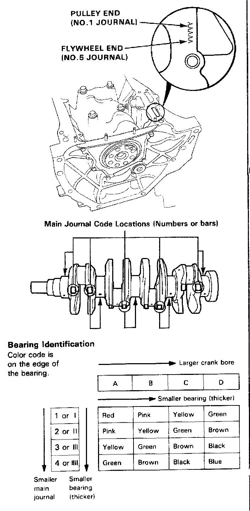

Crankshaft Main Bearing: Service and Repair
Checking Clearance1. To check main bearing clearance, remove the main caps and bearing halves.
2. Clean each main journal and bearing half with a clean shop rag.
3. Place one strip of plastigage across each main journal.
Note: If the engine is still in the car when you bolt the main cap down to check clearance, the weight of the crank and flywheel will flatten the plastigage further than just the torque on the cap bolt, and give you an incorrect reading. For an accurate reading, support the crank with a jack under the counterweights and check only one bearing at a time.
4. Reinstall the bearings and caps, then torque the bolts to 78 Nm (7.8 kg-cm, 56 lb-ft).
Note: Do not rotate the crank during inspection.

5. Remove the cap and bearings again, and measure the widest part of the plastigage.
6. If the plastigage measures too wide or too narrow, (remove the engine if it's still in the car), remove the crank, and remove the upper half of the bearing. Install a new, complete bearing with the same color code (select the color as shown in the image), and recheck the clearance.
Caution: Do not file, shim, or scrape the bearings or the caps to adjust clearance.
7. If the plastigage shows the clearance is still incorrect, try the next larger or smaller bearing (the color listed above or below that one), and check again.
Note: If the proper clearance cannot be obtained by using the appropriate larger or smaller bearings, replace the crank and start over.
Caution: If the codes are indecipherable because of an accumulation of dirt and dust, do not scrub them with a wire brush or driver. Clean them only with washing oil or detergent.
Crank Bore Code Location (Letters)

Letters have been stamped on the end of the block as a code for the size of each of the 5 main journal bores. Use them, and the numbers or bars stamped on the crank (codes for main journal size), to choose the correct bearings.